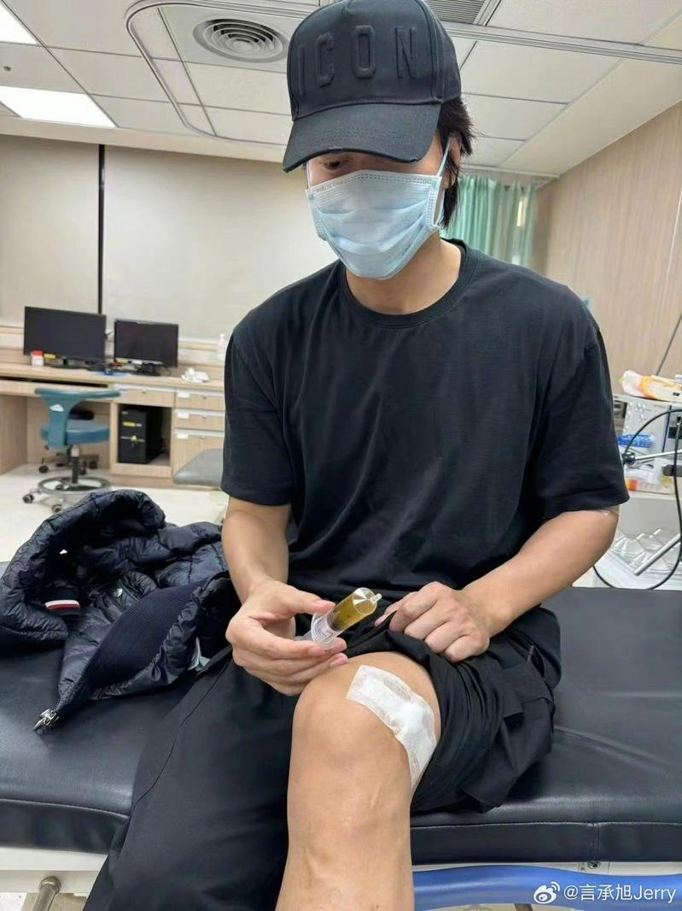
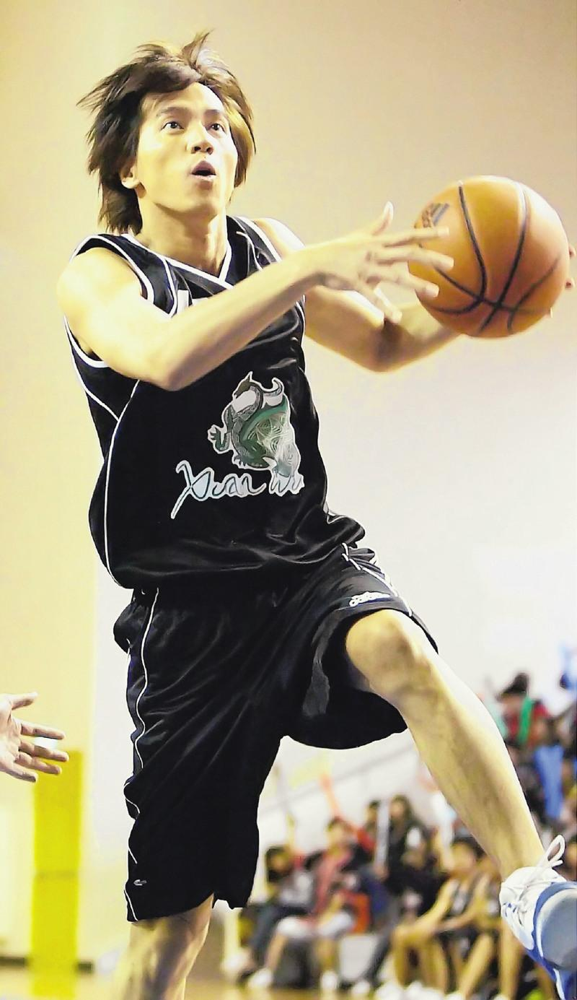

台湾演员、46岁的言承旭从F4出道，演出「流星花园」而走红，近几年事业重心转往大陆发展。他获邀参加大陆综艺时，却传出因为左膝受伤，得撑着拐杖行走。经过医生审慎评估伤势后，已经退出节目，还因此推掉原本洽谈的戏约，估计要复健休养半年。
根据镜周刊报导，言承旭获邀录制陆综「我在横店打篮球」，在初期锻炼时，不仅左膝盖旧伤复发，更传出半月板碎裂、膝盖严重积水肿大，一度痛到寸步难行，还得杵着拐杖才能行走。

报导指出，言承旭在退赛后坦言错估形势，他原本看到年纪相仿的刘畊宏参加「我在横店打篮球」，认为自己一定也可以做得到，却忽略了刘畊宏体力、肌耐力都胜过一般人，也忘记自己已经46岁了，不再像是当年拍偶像剧「篮球火」时，才年仅30初头。
据悉，言承旭2016年曾因十字韧带断裂，被目击现身邮政医院，他表示仅是去做核磁共振检查，并没有开刀动手术，主要是担心术后会有风险。拍摄电视剧「篮球火」时，曾接连弄伤颈部以及左手，但却为了不耽误拍摄行程而忍痛继续，还曾因日夜不停赶戏，劳累过度、肠胃炎送医。言承旭上月回台参加陈美凤生日宴，手肘受伤绑着绷带。